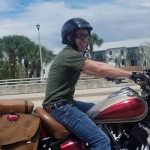

About Me
Who Am I?
My name is Matt and I live in sunny south Florida. When I am not behind a computer working on a project, I am likely at the gym practicing Muay Thai or watching live sports at home.
I have spent most of my 20's learning what makes me happy and how I would like to spend the rest of my life. It has not always been an easy journey, but I am very content with where I am in life and look forward to the future.
Web Developer
While 2020 has most certainly brought much doom and gloom, it has also delivered a useful time to pursue new opportunities. I was laid off from my job as a restaurant server and found myself unsure of what to do.
I knew I did not want to look for another job in restaurant work. After spending countless hours of research, I decided that learning front-end development would be a great path for me.
I was wise to listen to a YouTuber who strongly emphasized the importance of creating your own projects. I am proud to mention that I have handmade this web project on my own
Fitness Enthusiast
All my life I have either been involved in sports of training in a gym. I have been a competitive cheerleader, won a bodybuilding contest, and practiced Muay Thai. Exercise is in my blood and I cannot live without it.
Keeping on a fitness schedule is what keeps me on an even keel. These days I do not care much about having a certain physique or emulating a certain idol. I just care about feeling good and keeping myself in a good mood - and that is exactly what exercise and a clean diet can do for me.
Music Addict
I have always loved to spend time enjoying music and it seems bizarre to me that there are people who do not. There is nothing more pleasurable than vibing to a good tune and feeling free and happy.
These days I seem to spend most of my time listening to either electronic or rap music. I am always finding new artists and genres to dive into.